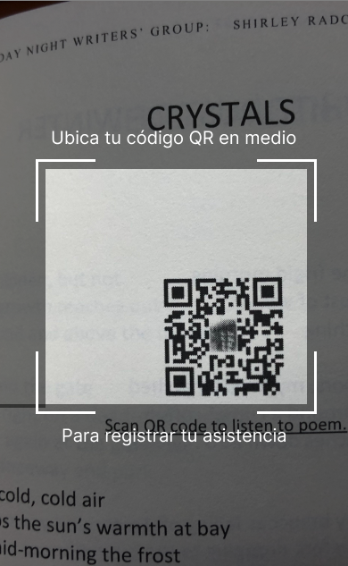

<ion-content [fullscreen]="true">
  <app-header-reg1></app-header-reg1>
    <div class="camara">
      
    </div>

    <div class="camera-icon" id="open-modal">
      

    <ion-modal
      trigger="open-modal"
      [initialBreakpoint]="0.40"
      [breakpoints]="[0, 0.40]"
      handleBehavior="cycle"  >
    <ng-template>
      <ion-content class="ion-padding">
        <div class="ion-margin-top">
          <ion-label>Estás registrando asistencia para:</ion-label>
        </div>
        <div class="portafolio-imagen">
          
        </div>
        <div class="info">
          Si esta información es correcta, puede continuar
        </div>
        <div class="info2">
          De no serlo, por favor, vuelve a intentarlo.
        </div>

        <div class="boton-registrar">
          <button (click)="mostrarSpinner(); cerrarModal()">Registrar</button>
        </div>
        
        <div class="boton-cancelar">
          <button (click)="cerrarModal()">Cancelar</button>
        </div>
      </ion-content>
    </ng-template>
  </ion-modal>
    </div>
</ion-content>
